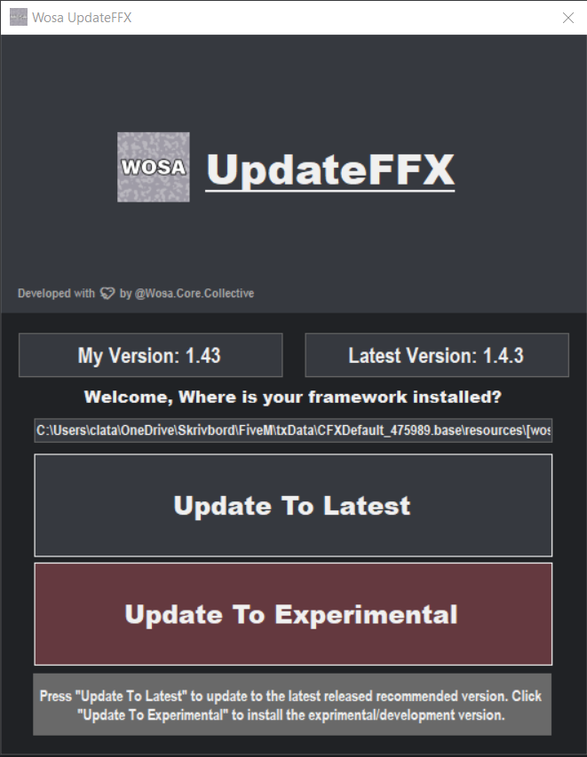

UpdateFFX Guide
Lets learn how to use our UpdateFFX and what it is!
What is "UpdateFFX"?
UpdateFFX which stands for Update Framework FxServer is essentially a program which is used by server owners to update the framework when a new version is released on GitHub. The key difference with using our tool is that you will have all of your configuration files automatically saved so you dont have to save them manually before downloading a new update. The tool is only designed to be used on Windows and is only properly tested on Windows 10.

How to download
You will only have to download our setup.exe file and run that and your good to go! Updates of the program itself are handled automatically on the launch. Note that your computer might think that this is a virus or something bad even though it is not :(
Preventing issues
- Do not have wosa resource scripts in the open
resources/folder, Instead isolate them into a catogory such asresources/[wosa]/. - Always make sure that your server is off before updating any wosa related resource as the program might not be able to handle files that are already in use by the server.
- Do never close the program while you are updating as that might screw up, delete or put your files into a unrecoverably state, Just wait it out.